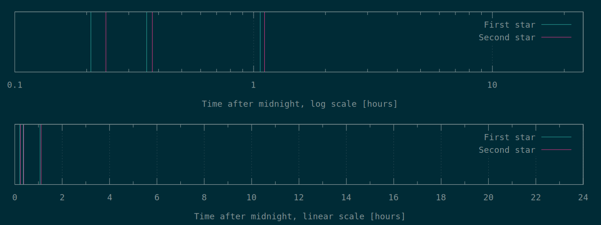

Ranking for star 1 Ranking for star 2
Source data: day15subm.txt, extracted from submission_times.txt
Script to generate graph: submtime.gpi
Last updated Sat Dec 1 00:50:13 EST 2018
=======Last updated Fri Nov 30 23:02:30 EST 2018
>>>>>>> Stashed changes